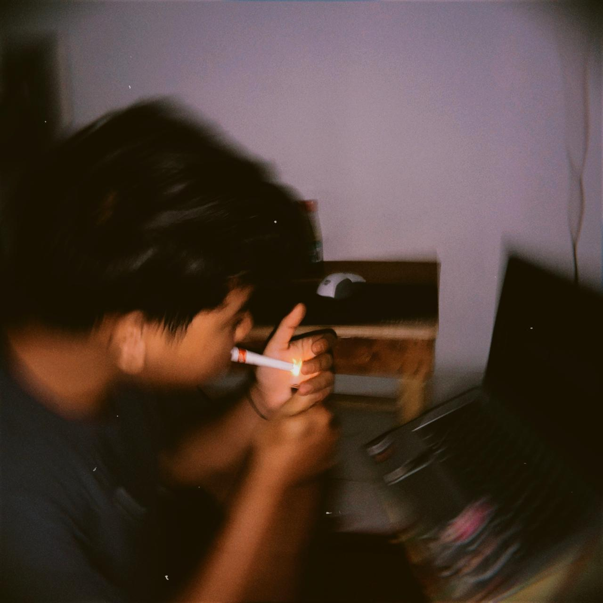
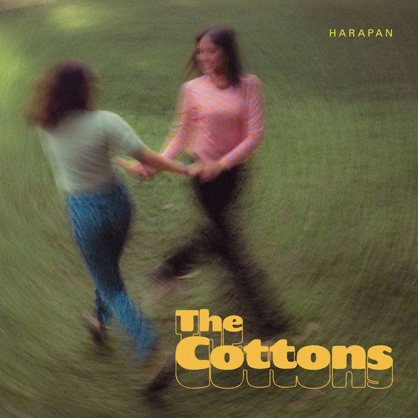
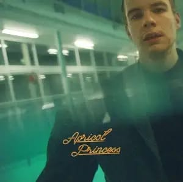
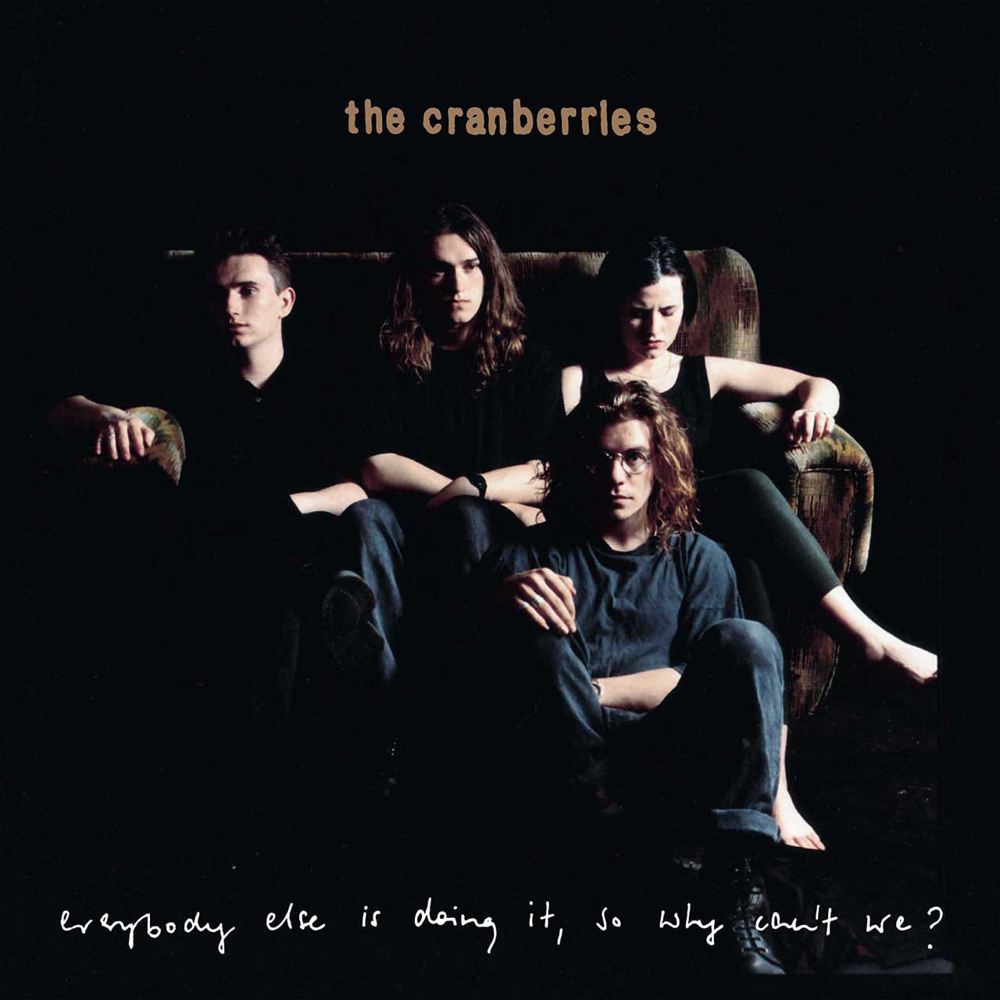
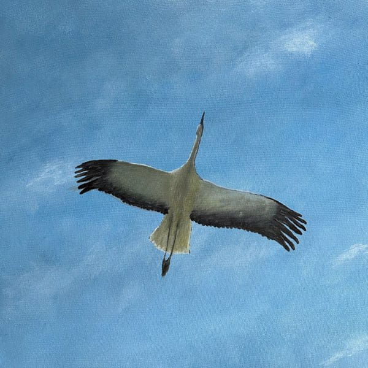
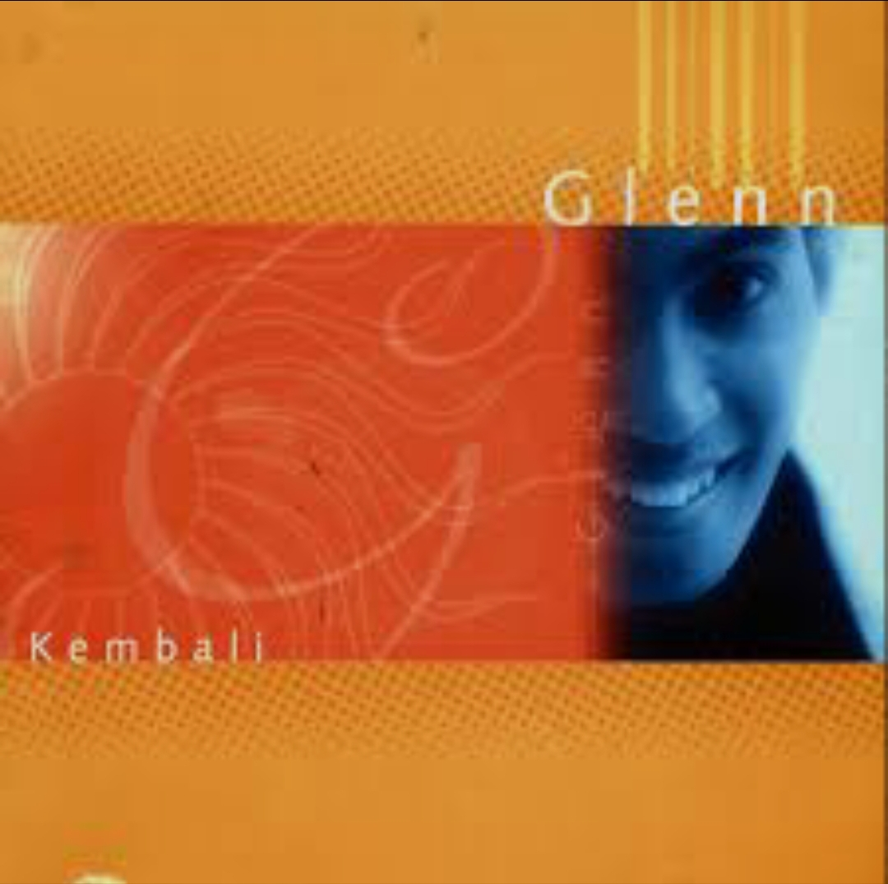
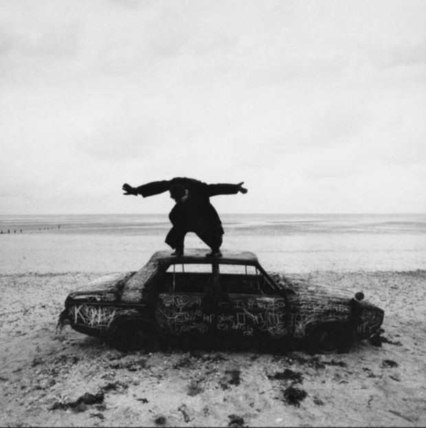

Public Playlist
| # | Title | Album | |
|---|---|---|---|
| 1 |
 Harapan, Pt. 1The Cottons |
Harapan | 5:32 |
| 2 |
Harapan, Pt. 2The Cottons |
Harapan | 5:31 |
| 3 |
Harapan, Pt. 3The Cottons |
Harapan | 4:26 |
| 4 |
When I Was Your ManBruno Mars |
Unorthodox Jukebox | 3:29 |
| 5 |
 HappinessRex Orange County |
Apricot Princess | 4:39 |
| 6 |
The Man Who Can't Be MovedThe Script |
The Script | 3:58 |
| 7 |
I Will FlyTen2Five |
Journey | 3:27 |
| 8 |
Ours To KeepKendis, adis |
ours to keep | 3:27 |
| 9 |
 LingerThe Cranberries |
Everybody Else Is Doing It, So Why Can't We | 4:30 |
| 10 |
 PudarMurphy Radio |
Debu Kan Kembali Menjadi Debu | 3:56 |
| 11 |
 Kasih PutihYovie Widianto, Glenn Fredly |
Kembali | 3:36 |
| 12 |
 About YouThe 1975 |
Being Funny In A Foreign Language | 4:54 |
| 13 |
Tell Me How?Snuzzle |
Tell Me How? | 3:36 |
| 14 |
SweetCigarettes After Sex |
Cigarettes After Sex | 4:48 |